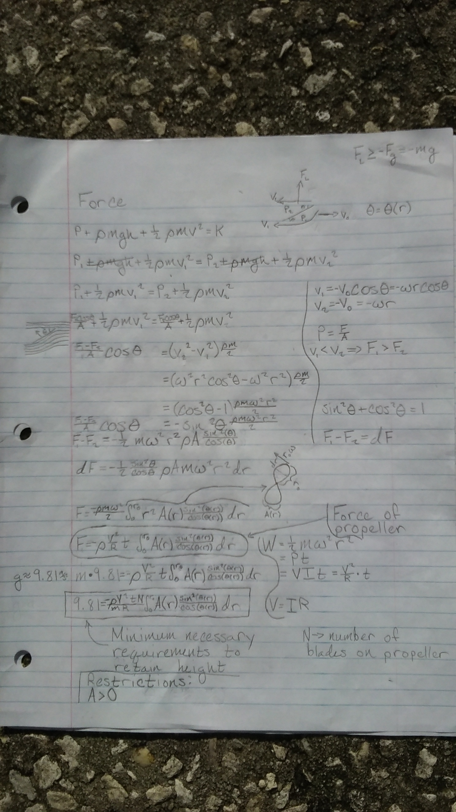
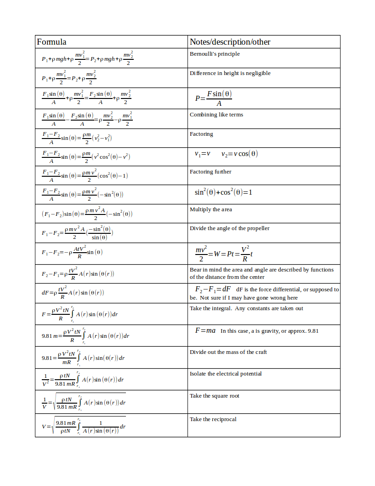

A while ago, I got a little curious about something. I wanted to see if I was able to find the minimum power I needed to produce enough lift on some aircraft to be able to at least counteract earth's gravity. I figured if I could get it to the point that I was sure that the numbers were correct, and thus I could efficiently power it, I might turn it in to a fun side project using my microcontroller and see what else I could maybe get it to do.
I realize this isn't the first time it's been done, and there are even probably more accurate ways of making the calculations, but this was mainly to see if I could. It's also something to add as a demonstration of understanding on top of this site should I be able to finish it.
The first image is a picture taken of the final paper I have decided to stick with. The first couple of papers, I had no idea where to start, so there's a lot of irrelevant information on them that I have left out after I started over a few times that seemed relevant at the time, but that was because I was starting from the wrong area or a different place entirely to attempt to find the information I wanted.
Since both my handwriting and the camera's pixel limit are factors to the readability of the actual paper I created, I also created a program-created image that contains mostly the same information as the sheet of paper I made. At least not including the hand-drawn pictures as references to what I was talking about. But on the other hand, it is made neater than the picture of the physical paper.
I'm almost certain this formula is wrong, as I'm sure I made a mistake somewhere, so I'm going to revisit it at a later date to verify that everything works out or what exactly is wrong if it is. Either way this is the most updated version of this sheet that I have made. I have ironed out a few things and it seems to work. Better, at least.